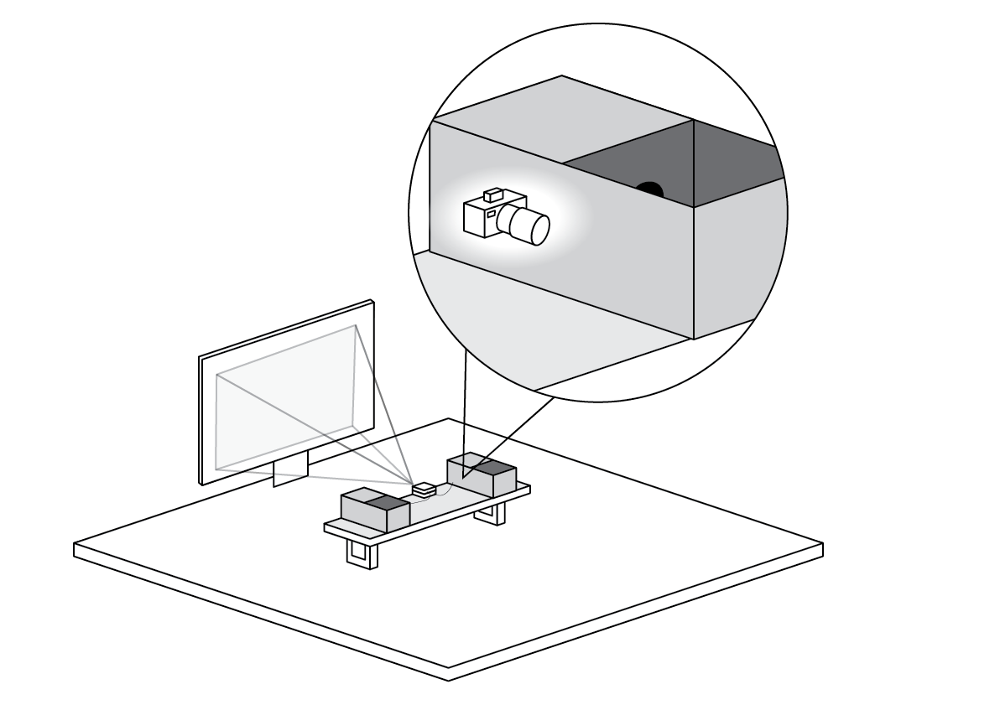
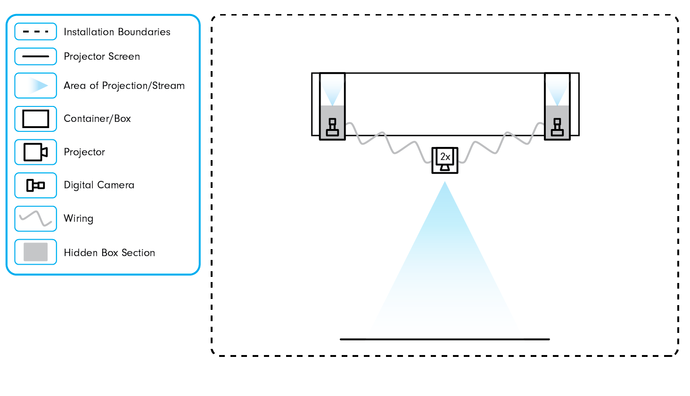
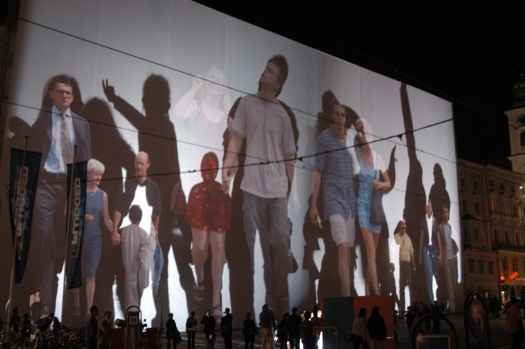

Air Brush
Basic Intro to Circuits
This was a group project for an introduction to technological systems course I took in the Summer of 2022 where we were tasked with creating an aesthetically pleasing product using atleast three electrical sensors and functioning code.
This project started with our group of four exploring possible options for a topic of our project. We all had a similar interest in the educational tool stream and decided to make this the focus of our product.
Our initial idea was a broad tool for drawing which children would be able to use to practice their writing virtually. In this iteration we realized from feedback given by our professor, that this idea was too broad and would need to be narrowed down to get a stronger concept.
From this exploration and feedback we did further research that lead us to developing an educational tool where users between the ages of 15-20 would be able to practice graffiti-style artwork in an alternative and non-destructive way.
The software used for creating the illustrations was adobe illustrator, and the technical components were controlled using Arduino and Processing.


In the initial sketches for this project we looked into having a remote controller as the object we could draw with and use it in combination with a processing sketch that would map the movement of the cursor and draw.
The equipment borrowed from the library included two projectors, two digital cameras, and a portable projector screen. The boxes were crafted by our team using cardboard and construction paper.
The boxes were built in a way that would hide the cameras in a section of the box and have it view a closed off section on the other side of the box. This would be the stage where users could put their hands or objects in and see it displayed on the screen.
 We set up posters outside the room to create an intriguing visual element that would have individuals curious about what was going on inside. Since this was an interactive installation we needed participants to interact with the boxes.

Telematic Dreaming (1992) by Paul Sermon(Right)
Body Movies (2001) by Rafael Lozano-Hemmer(Below)
Goals
The goals for this project was that it simulated how people were connecting with one another through remote settings while working and interacting online during the pandemic between 2020-2022. It takes a unique approach and shows how people could be in seperate spaces and still be together at the same time through modern technological mediums such as telecommunication applications which was commonly used during this time period.
Reflection
This project was an organic product that stemmed from interactive art inspiration and successful planning. All parts of this project worked correctly with our original idea and had remained unchanged throughout the process with the exception of a few minor changes. This was a positive experience collaborating with my four other teammates and all of our participants had enjoyed their experience interacting with the artwork and provided us with a great number of positive feedback.